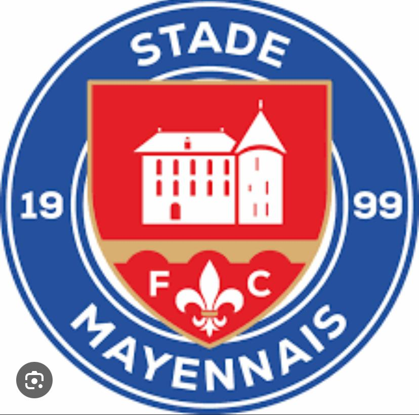

Bienvenue au club.
Une équipe de coachs.
Un même projet de jeu.

La vie du Stade Mayennais
@stademayennais →Retrouvez les joueurs et les actualités sur le compte Instagram du club.
Voir les photos du club →Votre espace de travail
5 rubriques, un projet communÉducateurs connectés
Les profils du club.
Séances, compositions et rapports enregistrés par chacun.
Changer mon mot de passe
Les documents enregistrés sont visibles par les éducateurs autorisés. Chacun modifie ses originaux ; les collègues peuvent en faire une copie. Vos brouillons restent sur cet appareil.
Dans cet espace privé, « Enregistrer » synchronise automatiquement votre séance, composition ou rapport. Les brouillons restent personnels sur cet appareil. Les documents du club s’actualisent automatiquement.
Importer ou renvoyer un document enregistré
Les documents enregistrés sont partagés avec les éducateurs, y compris les noms, photos et observations qu’ils contiennent.
Actualisation automatique toutes les 10 secondes, et au retour sur la page. Les documents des autres éducateurs sont consultables et copiables ; leurs originaux restent protégés.
Mon équipeChoisir une catégorie · Football à 11Configurer ⌄
Pour toutes les équipes à 11 du club. La catégorie est libre ; confirmez la durée selon votre compétition. Les nouveaux rapports reprendront ce profil, sans modifier les rapports existants.
Les séances enregistrées de ce coach, par jour et horaire.
La semaine au terrain.
Une séance adaptée au groupe, un objectif clair à chaque atelier.
Créez-la de A à Z ou utilisez l’assistant et les fiches du club.
Séances enregistrées sur cet appareil. L’espace privé du club permet de partager les documents choisis après connexion.
Le groupe et le rendez-vous
Le niveau décrit les compétences observées, pas une équivalence avec un diplôme ou un classement de compétition. Les surfaces proposées sont des points de départ à ajuster sur place.
L’assistant de séance du club
Choisissez votre priorité : l’assistant assemble les exercices de la bibliothèque et explique ses choix. Vous gardez la main sur le contenu et la charge.
Référentiel sportif du club
Importez une fois le référentiel privé du club : ses renvois de pages accompagneront les propositions. Aucun document n’est envoyé sur Internet.
Assistant à règles et fiches prédéfinies, sans modèle d’IA conversationnel, clé API ni extension. Les exercices restent à valider par le coach.
Que travailler cette semaine ?
Choisissez une intention de jeu et sa sous-partie. Le générateur construit une proposition à valider par le coach.
Choisissez un axe, puis sa sous-partie. « Ludique » ne comporte pas de sous-partie.
Option avancée · échange manuel avec ChatGPT
Préparer avec ChatGPT · sans clé API
Ouvrir ChatGPT ↗1. Préparez et copiez la demande. 2. Collez-la dans ChatGPT. 3. Collez sa réponse JSON ici, contrôlez-la puis choisissez de l’utiliser. Cette fonction n’envoie aucun message automatiquement.
Importez le référentiel privé ou utilisez l’extension fournie aux coachs.
Voir la demande préparée
Le projet commun guide la proposition sans réentraîner le modèle. Les adaptations restent à valider par le coach. N’incluez pas d’informations personnelles inutiles dans l’objectif libre envoyé à ChatGPT.
Le déroulé
Références FFF · BMF, BEF, DES et statut des fiches
Le BMF, le BEF et le DES sont des diplômes d’entraîneur, pas une échelle de classement des exercices. Cette bibliothèque contient des propositions pédagogiques du club : aucune fiche n’est présentée comme homologuée ou issue d’un diplôme FFF.
Références officielles à consulter : Portail formations FFF · Fédération Française de Football. La consultation et le rattachement documentaire précis restent à vérifier.
L’après-match.
Observer, comprendre, préparer la suite.
Rapports enregistrés sur cet appareil. Le partage dans l’espace privé du club est facultatif et nécessite une connexion. Aucun rapport n’est publié sur GitHub.
À vous de jouer.
Composez votre équipe, donnez vie à vos idées.
Vos 11 joueurs gardent leurs numéros. Les flèches, les adversaires et leurs positions sont indépendants de la vue Composition & plans de jeu.
Connecté à votre compte, chaque explication enregistrée est partagée dans Travail du club. Hors connexion, le partage reste en attente. Pour une animation, le départ de la dernière lecture est enregistré avec la vitesse et le choix de passe.
Vidéo : de l’étape affichée jusqu’à la fin, à la vitesse choisie. Dans Canva : Importer → Importer des fichiers → choisissez la vidéo ou l’image.
Déplacez les joueurs au doigt, à la souris ou avec les flèches du clavier.
Tracez une flèche sur le terrain pour indiquer une course ou une intention de jeu.
Adversaires ↓ · Votre équipe ↑ · Déplacez les deux équipes librement.
Impacteurs / Finisseurs sur le terrain
Les pions I/F sont visibles sur la pelouse et déplaçables. « Faire entrer » effectue le changement.